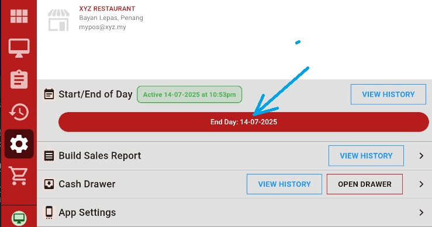
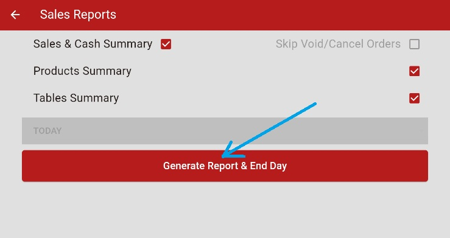
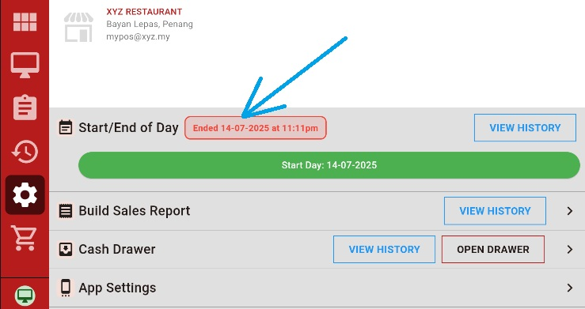

1
Close All Sessions
In offline mode, close all drawer sessions and open orders before ending day.
2
Close Drawer Session
Ensure any open drawer session is properly closed.
3
Close Open Orders
Complete or cancel all pending orders before proceeding.
4
Click End Day Button
Press the red "End Day" button and confirm to proceed.

5
Generate Daily Report
Create daily report to finalize the end day process.

6
End Day Complete
After report generation, end of day process is finished.

7
System Locked
All drawer and order activities are blocked until next business day starts.
8
Undo End Day (Supervisor)
Supervisor can long press the "Ended" button to reverse the end day process.
9
View History
Click "View History" button to see 7 days of start/end day records.
Day Successfully Ended
Business day closed and system secured!